实验实现¶
本页怎么用
- 本页给出
Lab5的推荐推进顺序、实现提示和测试建议。 - 真正动手前，建议先结合 实验原理 把磁盘布局、
inode/dentry关系和 FUSE 钩子理清楚。 - 如果实现中遇到异常，优先查看 常见问题 和 一些 debug 手段。
代码量预估
- 任务一主要用于熟悉工程结构、驱动接口和调试方式，实际改动很少。
- 任务二是本实验主体；如果以
simplefs为参考，主要工作集中在布局、位图、路径解析和几个核心钩子上。 - 本页只包含基础任务。之后依次为附加题一“扩展功能”、附加题二 CheckpointFS、附加题三 VectorFS、附加题四模型训练，详见 附加题（选做）。附加题一可独立完成，也是后续题目的前提；继续选做时，先完成其中相应的普通文件系统功能。
1.任务零：环境搭建¶
演示视频：
- HITSZ FUSE 文件系统（远程计算节点版）V2：https://www.bilibili.com/video/BV16ESFYeEUg/
1.1 实验包结构介绍¶
先获取实验包：
# cd ~
# git clone https://gitee.com/ftutorials/user-land-filesystem.git
实验包结构如下：
user-land-filesystem/
├── driver
│ ├── ddriver.sh
│ ├── kernel_ddriver
│ └── user_ddriver
├── fs
│ ├── demo
│ ├── simplefs
│ └── template
│ ├── src
│ │ ├── PROJECT_NAME.c
│ │ ├── checkpointfs.c
│ │ └── vectorfs.c
│ └── bonus
│ ├── include
│ │ ├── bonus.h
│ │ ├── checkpointfs.h
│ │ └── vectorfs.h
│ ├── src（教师支持源码）
│ ├── tools
│ ├── tests
│ └── README.md
├── LICENSE
├── README.md
└── setenv.sh
driver存放驱动相关代码。fs存放文件系统工程。其中demo对应任务一，simplefs是阅读参考，template用于生成任务二工程骨架。附加题支持文件直接位于fs/template/bonus，随普通工程生成一起复制；它们不包含普通 newfs 文件系统答案。setenv.sh用于配置 FUSE 文件系统实验环境，并生成任务二的工程目录。
1.2 配置开发环境¶
-
运行
./setenv.sh。teststu_8@OSLabExecNode0:~/user-land-filesystem$ ./setenv.sh 请输入工作目录名称 ([工作]目录将被至于./fs目录下): newfs ... 生成工作路径: /home/guests/teststu_8/user-land-filesystem/fs/newfs 请输入项目名称: newfs ...重要说明
setenv.sh用来创建 任务二 的项目。- 任务一 的工程已经在
fs/demo中准备好，不需要重复创建。 - 附加题学生源码与普通源码一起生成到
fs/newfs/src，支持文件在fs/newfs/bonus；附加题仍是选做，不需要再次生成或安装。
这里有两个名字：
- 工作目录名称：任务二工程所在的文件夹名，例如
fs/newfs。 - 项目名称：文件系统名称本身，用于源码中的前缀；不要包含空格和特殊字符。
生成后的工程结构大致如下：
./fs/newfs/ ├── .vscode ├── CMake │ └── FindFUSE.cmake ├── CMakeLists.txt ├── bonus │ ├── include │ │ ├── bonus.h │ │ ├── checkpointfs.h │ │ └── vectorfs.h │ ├── src（教师支持源码） │ ├── tools │ ├── tests │ └── README.md ├── include │ ├── ddriver_ctl_user.h │ ├── ddriver.h │ ├── fs.layout │ ├── newfs.h │ └── types.h ├── README.md ├── SPEC.txt ├── src │ ├── newfs.c │ ├── checkpointfs.c │ └── vectorfs.c └── tests ├── checkbm ├── mnt ├── stages ├── fs_test.sh ├── main.sh └── test.shfs/template是课程提供的工程模板，生成后的fs/newfs才是你编写代码的工作目录（若你输入了其他工作目录名，请相应替换路径）：- 做必做任务二与附加题一 ：直接编辑
fs/newfs/src/newfs.c和fs/newfs/include/下的头文件即可。 - 选做附加题二（CheckpointFS）或附加题三（VectorFS） ：练习源码已经一并生成在
fs/newfs/src/checkpointfs.c和fs/newfs/src/vectorfs.c中（初始返回-ENOSYS，不影响基础实验编译和运行），教师辅助代码与测试脚本位于fs/newfs/bonus/，CMake 与 FUSE 路由均已预先接好。 - 测试命令区分 ：不带参数的
bash tests/test.sh用于运行本页后面的基础实验测评；当你完成附加题二或三后，可在fs/newfs目录下运行bash tests/test.sh checkpoint、bash tests/test.sh vector或bash tests/test.sh all进行附加题自动验收（脚本会自动管理专用临时测试盘，不会擦除你的个人ddriver磁盘）。详见 附加题（选做）。
-
在当前终端执行：
source ~/.bashrc这一步是为了让刚才配置的环境变量在当前命令行生效。
-
输入
ddriver。如果能看到如下界面，说明环境配置成功：
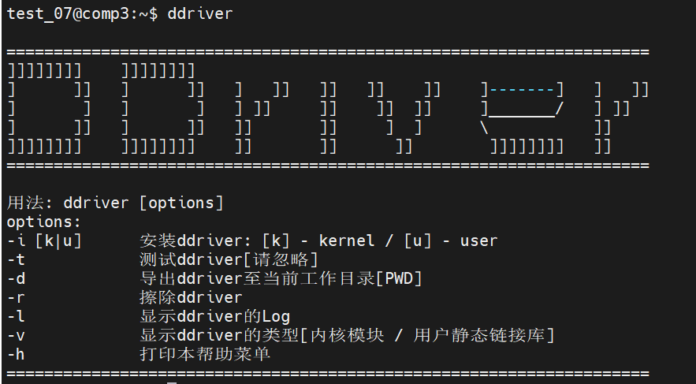
1.3 项目编译¶
任务一和任务二需要分别编译：
- 做任务一时，请在 VSCode 中选择
File -> Open Folder...，再选中fs/demo目录。 - 做任务二时，请在 VSCode 中选择
File -> Open Folder...，再选中fs/newfs目录。
建议按下面顺序配置：
-
在 VSCode 中打开正确的工程目录。
下面以任务二的
fs/newfs为例：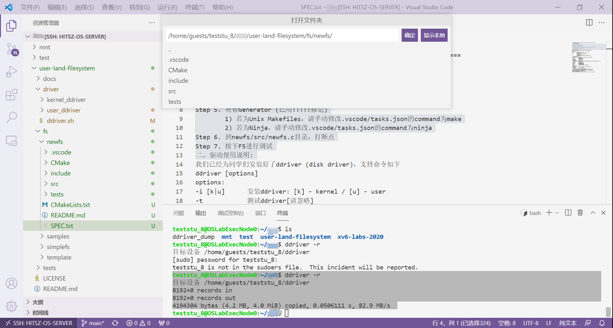
-
安装三个插件：
CMakeCMake ToolsC/C++
其中
C/C++建议使用1.10.8版本，高版本可能不支持当前环境下的 GDB 调试。下面给出两种安装方法：方法一：通过 VSCode 扩展面板安装（推荐）
- 打开 VSCode 左侧的扩展面板（Extensions）。
- 搜索
C/C++。 - 点击扩展右下角的设置按钮（齿轮图标）。
- 选择安装到远端：
Install in SSH:10.249.12.98。 - 选择
Install Another Version...。 - 在弹出的列表中查找并选择
1.10.8版本进行安装。
方法二：手动安装 VSIX 文件
- 下载
cpptools-linux.vsix文件：点击这里下载。 - 将下载好的
cpptools-linux.vsix上传到远程 Linux 环境，可以直接在 VSCode 远程文件管理器里拖拽上传。 - 在 VSCode 中按
Ctrl+Shift+P打开命令面板。 - 输入并选择
Extensions: Install from VSIX。 - 在弹出的文件选择器中找到刚才上传的
cpptools-linux.vsix文件并安装。 - 安装完成后重启 VSCode。
安装完成后，建议在扩展面板里确认
C/C++的版本号确实是1.10.8，并关闭自动升级。CMake和CMake Tools一般直接在扩展面板中搜索安装最新版本即可。如果插件下载较慢，
CMake Tools也可以参照上面的 VSIX 方法手动安装。下载
cmake-tools.VSIX文件：点击这里下载。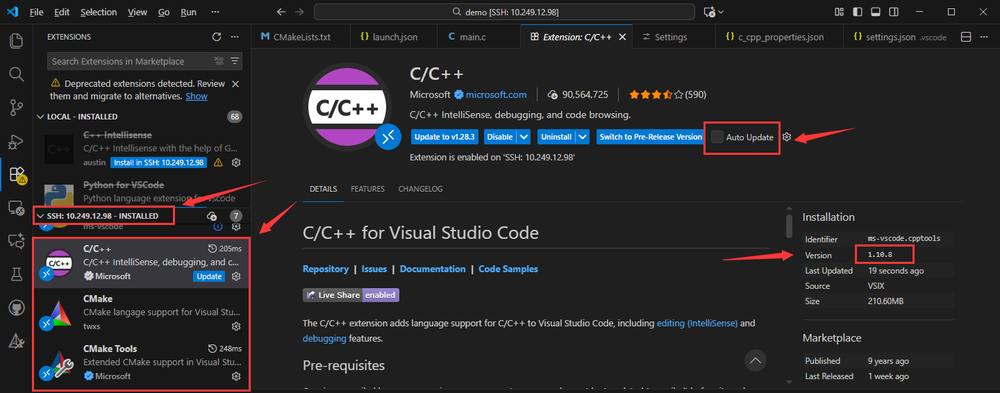
-
将
CMake: Generator设置为Unix Makefiles。可以按下面步骤操作：
- 点击 VSCode 左下角齿轮，打开“设置”。
- 在搜索框中输入
@ext:ms-vscode.cmake-tools generator。 - 切换到远程 SSH 对应的设置页。
- 在
CMake: Generator一栏中填入Unix Makefiles。
这一步要改的是远程环境里的配置，不是本地配置。
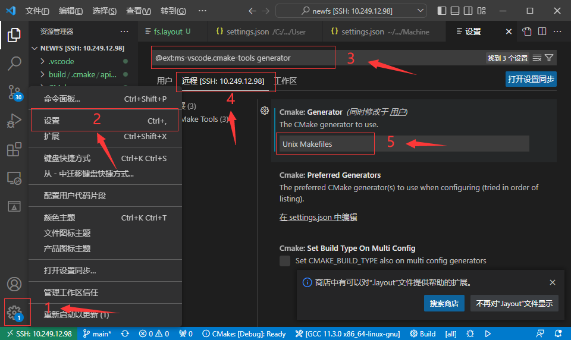
-
执行
CMake: Select a Kit，选择 X86_64 版本的 GCC。按
Ctrl+Shift+P打开命令面板，输入并选择CMake: Select a Kit，然后在列表中选择 X86_64 版本的 GCC。这里不要选成别的架构或别的编译器，否则后面的配置、编译和调试都可能出问题。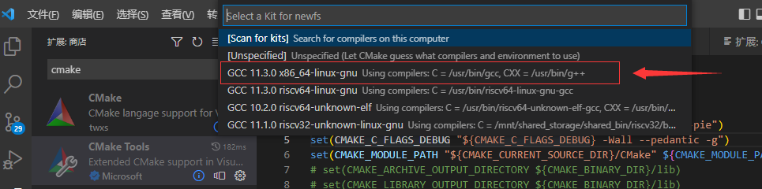
-
执行
CMake: Configure，确认输出中出现Generator相关信息。再次按
Ctrl+Shift+P打开命令面板，输入并选择CMake: Configure。这一步会根据前面选好的Generator和Kit生成工程配置。首次执行时通常会在输出窗口打印一串检测信息；只要能看到Generator相关内容，且没有明显报错，一般说明这一步已经成功。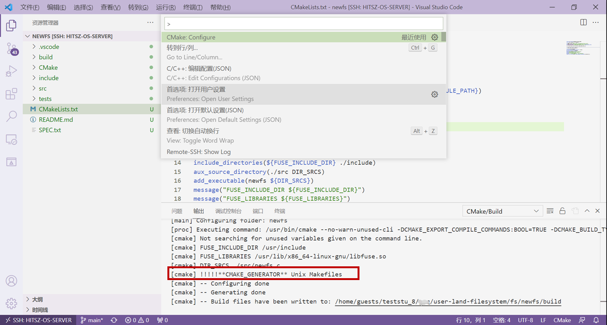
-
如果需要调试，可以先在源码中打断点；随后按
F5（或Fn+F5）运行并挂载文件系统。下面以任务二的
fs/newfs为例：可以先在newfs/src/newfs.c中打断点，然后按F5启动。VSCode 会先编译程序，再按实验提供的启动配置运行文件系统，并将其挂载到./tests/mnt。如果没有打断点，它就会直接运行并保持前台挂载状态；这时如果还要执行ls ./tests/mnt等命令，可以再开一个终端。
F5 只是帮你通过 VSCode 启动文件系统；如果你更习惯命令行，也可以参考 实验原理 3.2 FUSE 文件系统的挂载与卸载 手动执行对应命令。
调试界面大致如下：
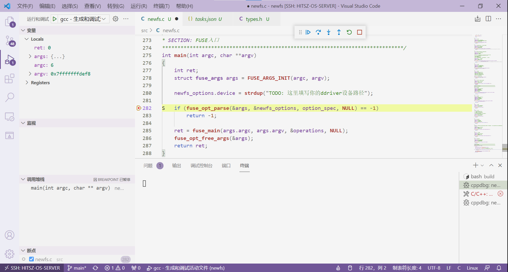
直接运行并挂载成功后，大致如下：
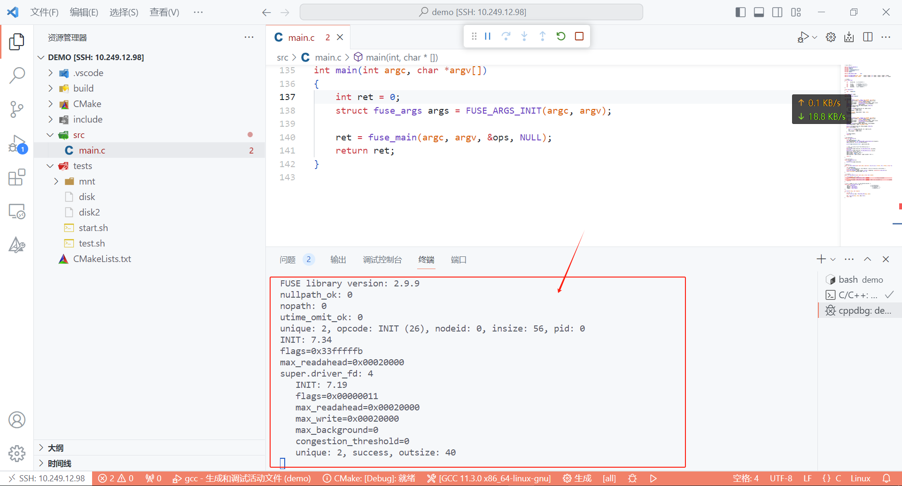
卸载时请在终端手动执行：
很多同学调试结束后会直接关闭程序或窗口，忘记先卸载挂载点。 请务必先卸载，再开始下一轮运行。 否则后续可能出现挂载失败、Transport endpoint is not connected 等问题。
fusermount -u ./tests/mnt
2.任务一：简单的文件系统demo¶
2.1 实现内容¶
这一题的目标很单纯：把 demo 工程补完整，让挂载后的文件系统在根目录下固定显示一个预设文件名 <filename>。
需要满足：
- 只需要支持
ls； - 根目录的数据位于逻辑块
500； - 这个逻辑块里只有一个
dentry，对应文件名<filename>； - 逻辑块大小与任务二保持一致，都是两个 IO 块，也就是
1024B； - 除了这里用到的块，其他磁盘内容都可以视为无关。
示意如下：
如果预设文件名是 pass_task1.txt，挂载后 ls 的效果如下：
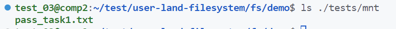
2.2 实现步骤¶
建议按下面顺序做：
-
请先在 VSCode 中选择 File -> Open Folder...，选中 fs/newfs 目录，读一下
src/main.c。任务一主要关注四个钩子：
demo_mount：挂载时执行，负责初始化后续要用到的超级块信息；demo_umount：卸载时执行，负责做清理工作；demo_getattr：告诉 VFS 某个路径是什么类型，例如目录还是普通文件；demo_readdir：在执行ls时返回“这个目录里有哪些名字”。
任务一只是一个很小的 demo，只要求在根目录固定显示一个文件名。因此这里先把注意力放在这四个钩子上即可，其他更完整的文件系统逻辑先不用展开。
-
先补
demo_mount()，把后续会用到的超级块信息填好。这里最关键的是通过
ddriver_ioctl取到：- 磁盘总容量；
- 单次 IO 大小。
然后据此得到逻辑块大小和逻辑块总数。任务一里，一个逻辑块等于两个 IO 块，所以这里不要把
512B当成逻辑块大小直接用。static int demo_mount(){ ... super.sz_io = /* TODO */; super.sz_disk = /* TODO */; super.sz_blks = /* TODO */; ... } -
再补
demo_readdir()，从逻辑块500读出那个demo_dentry，把文件名交给filler()。这里的
filler()可以简单理解成： 把一个目录项名字登记到这次ls的返回结果里 。也就是说，demo_readdir()不需要自己直接去拼输出字符串，而是把文件名一个个交给filler()，由 FUSE 帮你组织成目录读取结果。这一段通常会经过下面几步：
- 根据逻辑块号算出磁盘偏移；
- 用
ddriver_seek把磁盘头移动到对应位置； - 用
ddriver_read把内容读到内存； - 从读出的数据里还原出一个
demo_dentry； - 把其中的文件名拷到
filename，再交给filler()。
这里可以先忽略什么，为什么？
- 任务一里，
demo_readdir()的path、offset、fi都可以先忽略。 - 原因是：这一题只要求支持根目录下的一次简单
ls，不需要处理多级目录、不需要处理目录内容分页，也不需要依赖打开文件后的额外状态。 - 因此，这里只要把那个预设文件名读出来，并交给
filler()，就已经足够完成任务一。
static int demo_readdir(const char* path, void* buf, fuse_fill_dir_t filler, off_t offset, struct fuse_file_info* fi) { char filename[128]; /* TODO 1: 计算第 500 个逻辑块对应的磁盘偏移 */ /* TODO 2: 用 ddriver_seek 移动到该偏移 */ /* TODO 3: 用 ddriver_read 读出这个逻辑块 */ /* TODO 4: 从读出的数据里取出 demo_dentry */ /* TODO 5: 取出其中的文件名 */ /* TODO 6: 调用 filler() 把这个名字返回给 FUSE */ return filler(buf, filename, NULL, 0); } -
最后补
demo_getattr()，把这个文件显示成普通文件。这一题里，
demo_getattr()至少要区分两种情况：- 如果当前路径是根路径
/，就把它声明成目录； - 如果当前路径是你在任务一里固定返回的那个文件名，就把它声明成普通文件。
普通文件对应的
mode写法可以参考 实验原理 3.1 FUSE的简单示例 中对S_IFREG和权限位的说明。static int demo_getattr(const char* path, struct stat *stbuf) { ... /* TODO: 根路径 "/" 要按目录处理 */ /* TODO: 预设文件名要按普通文件处理 */ stbuf->st_mode = /* TODO */; ... } - 如果当前路径是根路径
2.3 测试¶
任务一有手动测试和测评程序两种。
手动测试每次会运行 start.sh，给出一个固定文件名，便于自己用 F5 挂载文件系统并调试代码。
测评程序会随机生成文件名来做测试，以防只写死固定答案；测评程序位于 ./demo/tests/test.sh。
2.3.1 手动测试¶
-
进入
fs/demo/tests，先运行：chmod +x start.sh && ./start.sh这个脚本会帮你准备固定文件名
pass_task1.txt的测试场景。 -
按
F5挂载文件系统。前提是已经完成前面的 1.2 配置开发环境 和 1.3 项目编译。前面这两节主要是按任务二的
fs/newfs来示范环境配置和 VSCode 使用方法；任务一的fs/demo也沿用同一套环境与操作方式，只是打开的工程目录不同。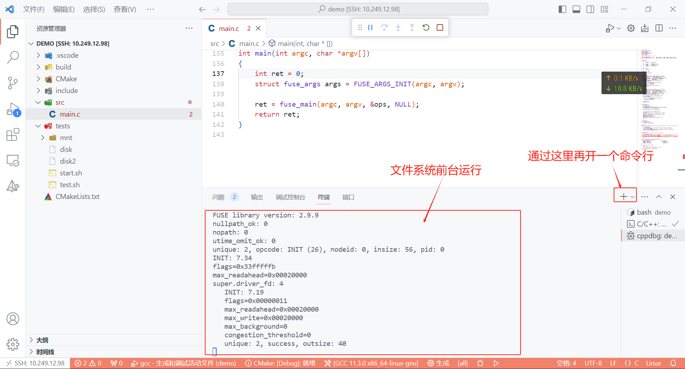
-
再开一个终端，在
fs/demo/tests目录下执行：F5挂载后，文件系统会在前台运行，因此需要另外开一个终端来查看挂载结果。可以在 VSCode 顶部菜单中选择Terminal -> New Terminal，也可以使用快捷键 Ctrl + Shift + `（ 注意：`不是‘（单引号），是键盘左上角的那个按键。 ），或使用终端面板里的“拆分终端”按钮。ls ./mnt如果输出的是
pass_task1.txt，说明任务一的核心逻辑已经通了。 -
使用结束后，记得正常卸载：
fusermount -u ./mnt最后一定要记得先卸载文件系统。 不要 直接在 VSCode 里终止程序，也不要直接
Ctrl+C，否则容易把挂载点留在异常状态。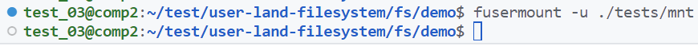
2.3.2 测评程序¶
任务一提供了测评程序。完成实验后，进入 fs/demo/tests 目录（ 请在该目录下运行测评程序 ），执行下面命令：
chmod +x test.sh && ./test.sh
通过时大致如下：
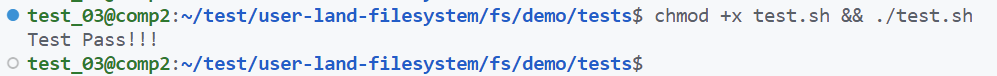
如果失败，可以先根据脚本提示回查：
super是否正确初始化；- 逻辑块大小是否按
1024B处理； readdir是否真的从逻辑块500读到了那个dentry；getattr是否把文件类型设置成了普通文件。
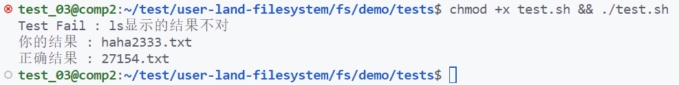
3.任务二：实现青春版EXT2文件系统¶
任务二建议始终围绕三件事来推进：
- 先把磁盘布局设计清楚；
- 再把和磁盘交互的读写接口封装好；
- 最后实现 FUSE 对外暴露的文件系统钩子。
实验总体结构可以参考 实验原理 4. 实验总体结构。
3.1 实现内容¶
任务二要求你在给定框架下实现一个青春版 EXT2 文件系统。至少需要满足下面这些条件：
- 支持挂载与卸载，支持
ls、touch、mkdir。 - 逻辑块大小固定为
1024B，也就是两个512B的 IO 块。 -
磁盘布局必须按顺序包含下面五个区域：
- 超级块
- 索引节点位图
- 数据块位图
- 索引节点区
- 数据块区
-
数据块采用按需分配，而不是预先全部分好。
- 必做部分统一规定： 不实现
.和..两个特殊目录项 。 - 必做部分只要求直接索引；软链接、硬链接、间接索引都不要求。
布局示意如下：
3.2 实现步骤¶
simplefs 可以作为参考，但只能参考其组织方式和部分工具函数思路，不能直接照搬。
最需要注意的一点是： simplefs 的布局和本实验要求不一样。 如果直接沿用它的布局，后面的布局检查一定过不了。
命令与钩子的对应关系
必做部分至少会涉及这些钩子：
ls：newfs_readdir、newfs_getattrnewfs_readdir用来读取目录下有哪些名字，newfs_getattr用来返回文件类型、大小等属性。
mkdir：newfs_mkdirnewfs_mkdir用来创建目录。
touch：newfs_mknod、newfs_utimensnewfs_mknod用来创建普通文件，newfs_utimens用来更新时间戳；有些touch命令会触发它。
建议按下面顺序推进：
- 先定磁盘布局，并把相关字段放进超级块。
- 再封装“任意偏移、任意大小”的磁盘读写接口。
- 再明确
super、inode、dentry的 in-Mem 和 to-Disk 结构。 - 先做
mount/umount，把首次挂载和再次挂载都跑通。 - 再做路径解析
lookup，因为后面的getattr、readdir、mknod、mkdir都会复用它。 - 最后补各个钩子，并且每做完一类操作就尽快手动测试。
3.2.1 磁盘布局设计¶
建议先回看一下 实验原理 中关于 super_block、inode、dentry 的介绍，先分清两类结构：
super_block_d、inode_d、dentry_d这类 to-Disk 结构，负责“磁盘上实际存什么”；super_block、inode、dentry这类 in-Mem 结构，负责“文件系统运行时在内存里怎么组织和使用这些信息”。
布局最终要写进超级块，因此超级块里至少要能描述：幻数、逻辑块大小、各区域 offset / blks，以及根目录入口。
先把两个最基本的量算出来：
- 虚拟磁盘容量是
4MB； - 逻辑块大小是
1024B。
所以整盘一共是：
4MB / 1024B = 4096 个逻辑块
接下来要决定这 4096 个逻辑块如何分给五个区域。这里没有唯一答案，但必须满足：
- 顺序正确；
- 五个区域都存在；
- 超级块里能完整描述这套布局；
include/fs.layout中填写的布局要和代码里的真实布局一致。
如果你参考 simplefs，这里一定要注意它和本实验的区别：
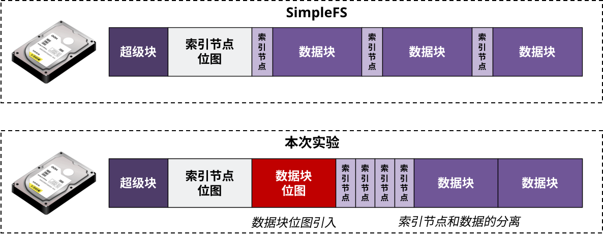
simplefs 和本实验的核心区别
simplefs把一个 IO 块直接当成一个逻辑块，也就是512B。- 本实验的逻辑块是
1024B。 simplefs采用固定分配思路，没有单独的数据块位图。- 本实验要求把
inode区和数据块区分开，并且用数据块位图管理按需分配。
下面给一个布局估算的例子，主要是帮助你建立量级感，不是唯一答案：
一个简单的估算例子
如果你假设：
- 超级块占
1个逻辑块； - inode 位图占
1个逻辑块； - 数据块位图占
1个逻辑块； - 每个文件最多使用
6个直接块； - 为了先做粗略估算，暂时按“一个
inode_d占一个逻辑块”来记；
可以按下面这个顺序来估：
- 先扣掉固定区域：超级块、inode 位图、数据块位图，共
3个逻辑块； - 整盘共有
4096个逻辑块，所以还剩
4096 - 1 - 1 - 1 = 4093
个逻辑块给 inode 区和数据区分配；
- 每个文件最多使用
6个数据块； - 这里又暂时按“一个
inode_d占一个逻辑块”来估； - 所以一个文件连同它自己的 inode，最多大约占
6 + 1 = 7个逻辑块。
于是，文件数量上限可以先粗略估成：
4093 / 7 ≈ 584
这说明：如果按这种最保守的估法，整个文件系统大约能支持 584 个文件。因此，inode 区更严谨的取法是先按 584 个逻辑块来留。
如果先给 inode 区留 584 个逻辑块，那么数据区还剩：
4096 - 1 - 1 - 1 - 584 = 3509
个逻辑块。
再检查一下数据区是否匹配：如果每个文件最多用 6 个数据块，那么这 3509 个数据块大约能支撑
3509 / 6 ≈ 584
个接近最大大小的文件，和前面的估算基本一致，说明这套布局在量级上是说得通的。
这个例子只是帮助你建立量级感。真实情况下，根目录、子目录、目录项本身也会占用 inode 和数据块，所以最终可支持的文件数量还会更少一些。
这里要注意，这种估法只是为了先把数量级算清楚。实际写实现时，inode_d 往往远小于 1024B，如果真的让一个逻辑块只放一个 inode_d，会显得比较奢侈；更常见的做法是一个逻辑块里放多个 inode_d。
设计好布局后，就要把这些结果真正落到挂载函数里：第一次挂载时计算并写入 super_block_d；后续再次挂载时再从磁盘读回，并恢复内存里的 super_block。大致思路如下：
int your_mount(struct options opt){
...
if(/* 第一次挂载 */){
/* 根据前面估算的布局，计算各区域的 offset 和 blks */
/* 填充 super_block_d 中和布局有关的字段 */
super_block_d.magic_num = /* 幻数 */;
super_block_d.blk_size = /* 逻辑块大小 */;
super_block_d.sb_offset = /* 超级块偏移 */;
super_block_d.sb_blks = /* 超级块块数 */;
super_block_d.ino_map_offset = /* inode 位图偏移 */;
super_block_d.ino_map_blks = /* inode 位图块数 */;
super_block_d.data_map_offset = /* 数据块位图偏移 */;
super_block_d.data_map_blks = /* 数据块位图块数 */;
super_block_d.ino_offset = /* inode 区偏移 */;
super_block_d.ino_blks = /* inode 区块数 */;
super_block_d.data_offset = /* 数据区偏移 */;
super_block_d.data_blks = /* 数据区块数 */;
super_block_d.root_ino = /* 根目录 inode 编号或入口信息 */;
/* 初始化位图、根目录等，并把 super_block_d 写回磁盘 */
}else{
/* 从磁盘读回 super_block_d */
/* 根据 super_block_d 重建内存里的 super_block */
/* 读回位图、根目录入口等运行时需要的信息 */
}
...
}
字段名不必和你代码里的命名完全一致，但含义上至少要分清两类：一类是需要持久化到磁盘的布局信息，另一类是只在运行时使用的内存状态。关键是第一次挂载时要把布局结果真正写进 super_block_d，后面再次挂载时才能恢复出一致的状态。
3.2.2 磁盘交互的封装¶
实验框架提供的底层接口是：
ddriver_seekddriver_readddriver_write
但这些接口有两个限制：
- 单次读写大小固定是一个 IO 块，也就是
512B； - 读写起始位置也要按
512B对齐。
所以更稳妥的做法是自己再封装一层，例如：
int your_read(int offset, void *out_content, int size);
int your_write(int offset, const void *in_content, int size);
这层封装的作用是：让上层代码以后都只关心“从哪个偏移读多少字节”，而不再反复处理 IO 对齐问题。
可以参考 simplefs，但不要直接照搬
可以参考 simplefs 的磁盘交互封装来写，但要注意两点区别：
- 本实验的逻辑块大小是
1024B，不是512B； - 后面超级块、位图和数据区的偏移，都要按你自己的布局来计算。
your_read() 的思路通常是：
- 根据
offset和size找到覆盖该区间的对齐下界与上界； - 用底层接口把这整段 IO 块读到中间缓冲区；
- 再把真正需要的那一段拷出来。
your_write() 则通常是标准的“读-改-写”：
- 先把受影响的 IO 块读出来；
- 在内存里改掉目标区间；
- 再整体写回去。
示意如下：
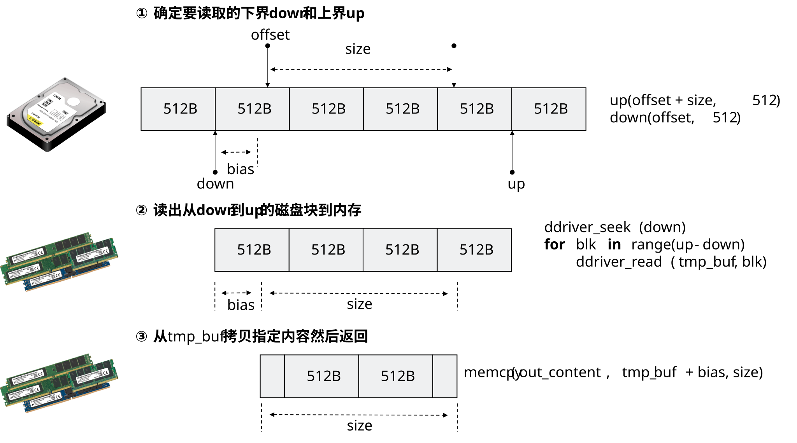
这一层封装很值得先写好
后面的超级块、位图、inode_d、目录项数组写回磁盘，都会反复用到它。把这一层先处理好，后续很多磁盘读写逻辑都会更清晰。
3.2.3 文件系统接口的实现¶
在实验原理部分，我们已经介绍了文件系统中常用的几类数据结构：超级块 super_block、索引节点 inode、目录项 dentry，以及它们各自的 in-Mem / to-Disk 形式。下面给出本次实验主要接口的实现参考，同学们可以结合 simplefs 的代码来理解和完成自己的实现。
3.2.3.1 挂载与卸载¶
在做这一部分之前，还需要先确定好磁盘布局，可先回看 3.2.1 磁盘布局设计。
在实验原理里已经介绍过，超级块通常要维护幻数、磁盘布局信息、根目录入口等内容。
（1）挂载函数
文件系统的 挂载函数 ，核心是构建并填充一个 in-Mem 版本的超级块 struct super_block，供后续整个文件系统使用。
- 如果是 第一次挂载 ，就需要重新初始化布局、位图、根目录等内容；
- 如果不是第一次挂载，就需要从磁盘中读取之前保存的
struct super_block_d，再恢复内存中的struct super_block。
判断是否为第一次挂载，通常是先从预设位置读出超级块，再检查其中是否存在约定的幻数 magic_number。
为什么可以用幻数判断？
幻数就是写在超级块里的固定标记。磁盘如果已经按你的文件系统格式初始化过，这里就能读到这个值；如果是第一次挂载，或者磁盘刚被重置过，通常就读不到。
挂载时维护的 in-Mem 超级块，一般至少要包括：
- 磁盘布局信息；
- 位图的内存副本；
- 根目录入口。
挂载函数的大致示意如下：
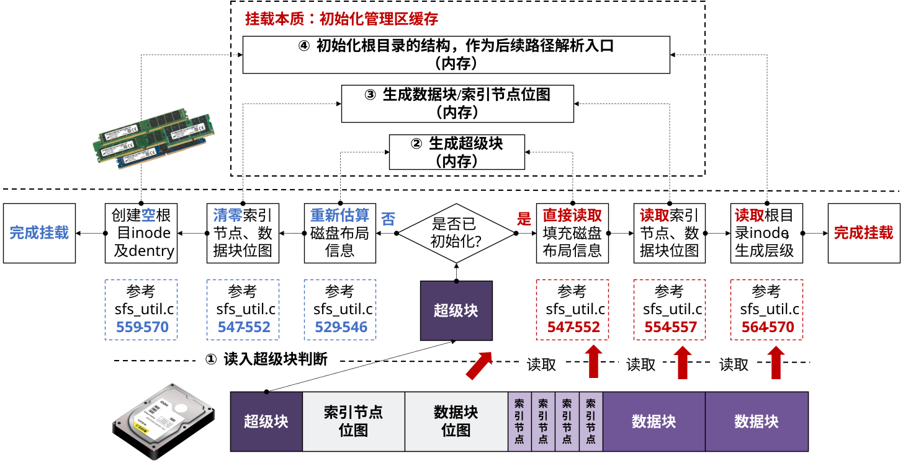
在 FUSE 中，挂载函数对应的钩子是 .init。实现好挂载函数后，需要将其挂到 .init 上。其函数原型如下：
void* init(struct fuse_conn_info * conn_info);
本次实验无需关注挂载函数的传入参数，保持函数声明一致即可。
补充
根目录比较特殊。普通文件或目录的 dentry_d 都存放在父目录的数据块里，但根目录没有父目录，因此根目录的 dentry 往往是在挂载时单独构造出来，再与根目录的 inode 关联起来。
提示
为了实现挂载功能，通常还需要先实现一些工具函数，例如 alloc_inode、read_inode、sync_inode 等。前期写这些函数时，可能暂时还看不到太多直接效果，但后面的创建、查找、卸载和刷回都会反复用到它们。
也可以参考 simplefs 的 sfs_dump_map()，用来检查 inode 位图和数据块位图是否修改正确。
（2）卸载函数
本次实验要求支持重新挂载，因此卸载时需要把相关数据结构刷回磁盘，供下次挂载时重新读取。
文件系统的 卸载函数 ，主要是按照磁盘布局，把文件系统当前维护的几类结构写回磁盘：
- 超级块
struct super_block_d； - 索引节点位图和数据块位图；
- 所有文件对应的
inode_d、目录项dentry_d以及必要数据。
最后，还需要关闭挂载时打开的虚拟磁盘。
卸载原理示意如下：
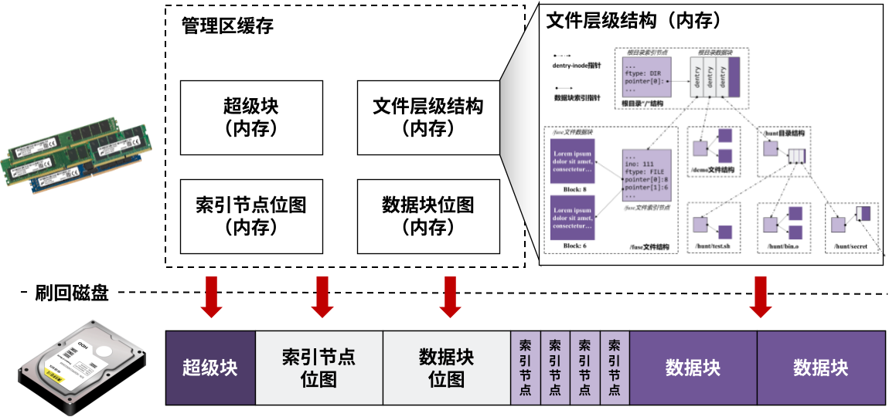
注意
这里的“文件”既包括普通文件，也包括目录文件。父目录的数据块里存放的是所有子文件的 dentry_d；因此，刷回目录文件的数据内容，本质上就是把它所有子文件的 dentry_d 写回到该目录对应的数据块中。
超级块和位图的写回比较直接。原因是：它们在磁盘上的位置通常是预先固定好的，挂载时也已经读入到了内存里；因此卸载时，只需要把内存中的 super_block_d、inode 位图和数据块位图，按各自约定的磁盘偏移直接写回去即可，不需要再做路径解析，也不需要遍历目录层级。
真正稍复杂的是整棵目录树的刷回。因为目录和普通文件是按层次关系组织起来的，刷回时不仅要写当前文件自己的 inode_d，还要处理它的数据内容，以及目录文件下所有子项的 dentry_d。一个常见做法是递归同步：
- 先写当前文件的
inode_d； - 再写当前文件的数据内容；
- 如果当前文件是目录，再把它的子项
dentry_d写回，并递归处理每个子文件。
这一过程可以参考 simplefs 中的同步思路。示意如下：
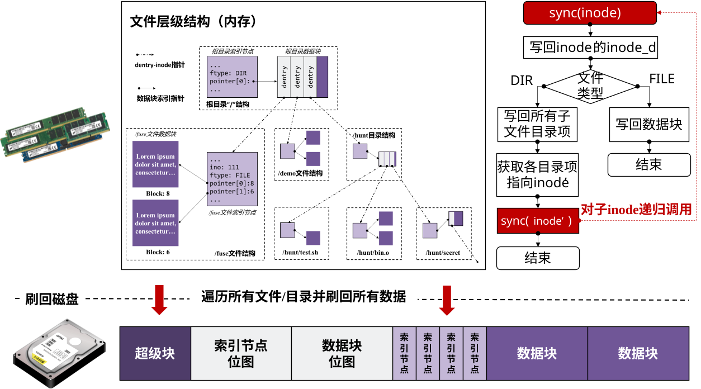
在 FUSE 中，卸载函数对应的钩子是 .destroy。实现好卸载函数后，需要将其挂到 .destroy 上。其函数原型如下：
void* destroy(void* p);
本次实验也无需关注卸载函数的传入参数，保持函数声明一致即可。
3.2.3.2 创建文件和目录¶
在文件系统中，一个文件通常至少包括三部分：索引节点 inode、目录项 dentry，以及文件数据 data。创建一个文件，首先要完成前两部分的建立和关联；普通空文件在本实验必做部分里通常还没有实际文件数据。
本次实验要求实现创建普通文件和创建目录文件，分别对应 mknod 和 mkdir 两个钩子。
普通文件和目录文件的创建流程大体一致，核心都是三步：
- 路径解析，得到父目录的
dentry； - 创建新的
dentry，并挂到父目录下； - 分配新的
inode，并与该dentry绑定。
整体流程如下图所示：
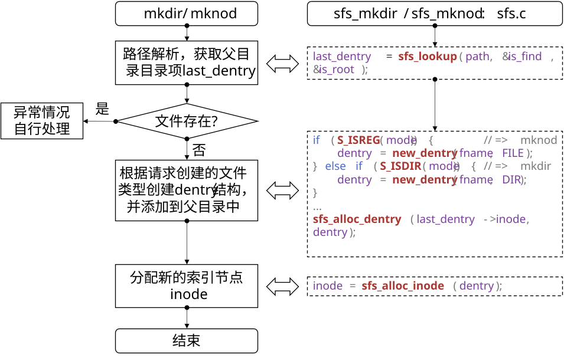
（1）路径解析，得到父目录的 dentry
先看路径解析的逻辑。在 simplefs 中，这部分对应 sfs_lookup。以路径 /hunt/bin.o 为例，解析时会从根目录开始，依次找到 hunt，再找到 bin.o 对应的 dentry。
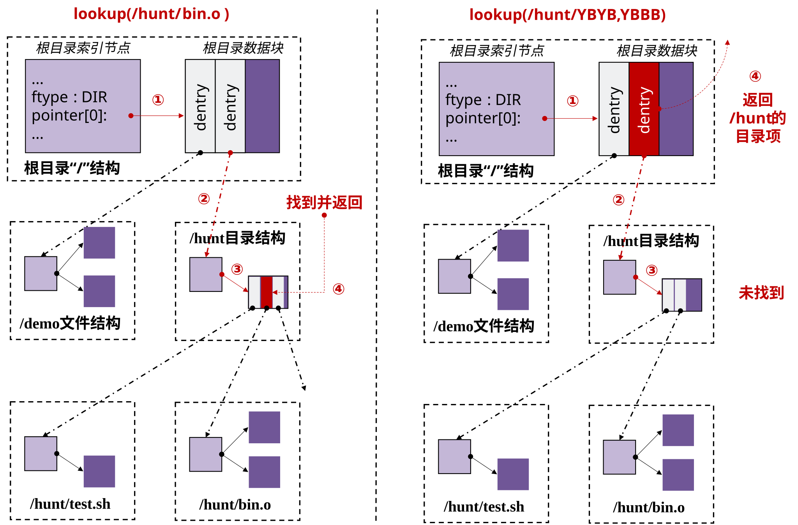
上面介绍的是“路径存在，能够找到目标文件”的情况，这种情况通常会用于后面的查找文件和目录功能。
但在创建文件时，目标文件此时本来就还不存在。也就是说，如果路径已经能解析到对应的 dentry，反而说明重名了，应该报错；如果目标不存在，则只需要返回它的父目录 dentry，供后续创建使用。
从 dentry 到 inode 的读取也很重要。dentry 里保存了对应的 inode 编号，有了这个编号，就可以按照磁盘布局，从磁盘指定位置读出对应的 inode_d，再恢复成内存中的 inode。
如果读到的是目录文件，通常还会顺便把该目录下所有子项的 dentry_d 一起读出，并在内存中组织起来。一个常见做法是链表：父目录 inode 指向第一个子 dentry，子 dentry 再通过 brother 指向下一个兄弟项。例如：
struct inode {
// ... 其他字段
struct dentry* first_child;
}
struct dentry {
// ... 其他字段
struct dentry* brother;
}
这样就能把父目录下的所有子项串起来。simplefs 采用的也是这种链表型组织方式，本次实验完全可以参考。
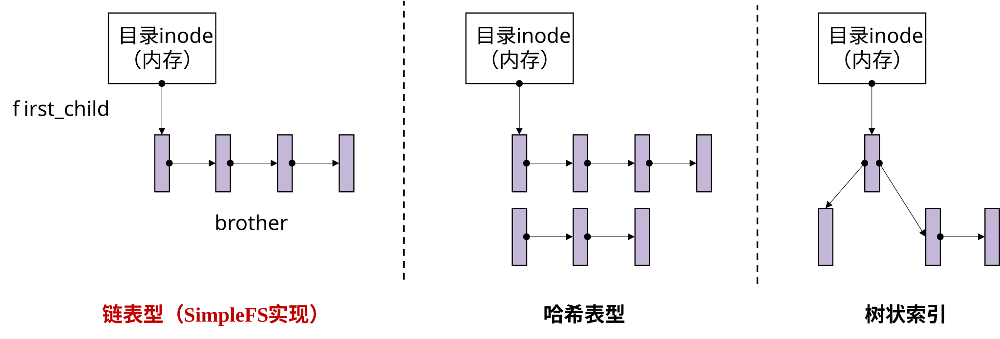
目录项索引
除了链表外，现代文件系统也常用哈希表、红黑树等结构来索引内存中的目录项；但对本实验来说，链表型组织已经足够。
（2）创建新的 dentry 结构，添加到父目录
这部分在 simplefs 中可以参考 sfs_alloc_dentry。
路径解析返回父目录后，就可以创建新的 dentry，并把它加到父目录下面。如果采用前面提到的链表组织方式，一个简单做法就是头插法：让新 dentry 指向原来的第一个子项，再让父目录 inode 指向这个新 dentry。
注意
这里把子 dentry 挂到父目录 inode 上，只是文件系统运行时在内存中的组织方式。卸载时，仍然需要把这些子项重新整理成 dentry_d，再写回到父目录对应的数据块里。
如果父目录原来用于保存 dentry_d 的数据块已经放满了，可能还需要为父目录再申请新的数据块，供后续目录项写回时使用。
本实验不涉及普通文件的数据读写，因此普通空文件通常不需要立刻分配数据块；但目录文件为了将来保存子项的 dentry_d，一般需要准备数据块。数据块分配可以参考位图扫描的方式：
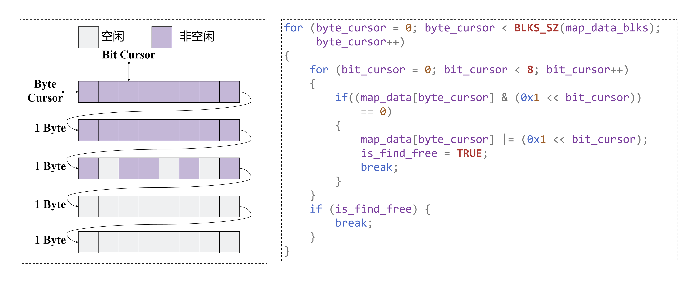
图中的意思是：把位图从前往后扫描，找到第一个值为 0 的位置，就说明这个数据块当前还是空闲的，可以分配给新文件或新目录；分配后，再把这一位改成 1，表示它已经被占用。
右侧代码段表达的也是这个过程：外层 byte_cursor 按字节扫描整张位图，内层 bit_cursor 再逐位检查当前字节里的 8 个 bit；if ((map_data[byte_cursor] & (0x1 << bit_cursor)) == 0) 表示“这一位还是 0，也就是找到一个空闲块”，随后用 |= 把这一位置成 1，并设置 is_find_free = TRUE 后退出循环。
（3）分配新的索引节点 inode
这部分在 simplefs 中可以参考 sfs_alloc_inode。
新创建的文件或目录都需要分配一个新的 inode。通常做法是遍历 inode 位图，找到一个空闲位，分配一个新的 inode 编号，然后构造对应的 in-Mem inode，并填写必要字段；后续卸载时，再把它写回到该编号对应的位置。
创建好 inode 后，还需要把它和前面创建的 dentry 绑定起来。类似的代码结构如下：
struct sfs_inode* sfs_alloc_inode(struct sfs_dentry * dentry) {
/* 遍历索引节点位图，分配 inode */
...
/* dentry 绑定该 inode */
dentry->inode = inode;
dentry->ino = inode->ino;
...
}
这段代码的关键在最后两行：dentry->inode = inode 是让这个目录项在内存中直接指向刚分配好的 inode；dentry->ino = inode->ino 是把对应的 inode 编号也记录下来。这样后面无论是路径解析、属性读取，还是卸载刷回磁盘，都可以通过这个 dentry 找到它对应的 inode。
通过上面三步，就可以完成创建文件和创建目录的核心逻辑。本实验不实现 . 和 ..，因此创建目录时也不要额外生成这两个特殊项。
创建普通文件对应的钩子是 .mknod，其函数原型如下：
int mknod(const char* path, mode_t mode, dev_t dev)
path是要创建文件相对于文件系统根目录/的绝对路径；mode可以用来判断上层请求的文件类型；- 本次实验不需要关注
dev参数。
创建目录文件对应的钩子是 .mkdir，其函数原型如下：
int mkdir(const char* path, mode_t mode)
path是要创建目录相对于文件系统根目录/的绝对路径；mode可以用来判断上层请求的文件类型。
3.2.3.3 显示文件和目录¶
（1）获取文件属性
在显示一个文件的时候，需要查看文件的属性，如文件大小、文件类型等信息。文件的属性在 Linux 中通过一个 stat 结构体来维护。
获取文件属性的函数的核心，就是填充好对应的 stat 结构体并向上层返回。获取文件属性的函数对应 getattr 钩子。
首先进行路径解析，得到传入路径对应的 dentry 结构，然后就可以根据 dentry 及其索引的 inode 结构来填充 stat 结构体字段。一个示例如下：
int sfs_getattr(const char* path, struct stat * sfs_stat) {
/* 路径解析 */
struct sfs_dentry* dentry = sfs_lookup(path, &is_find, &is_root);
/* 结构体填充 */
sfs_stat->st_mode = ...;
sfs_stat->st_size = ...;
}
stat 结构体通常需要填充如下一些常用字段：
| 结构体字段 | 字段含义 |
|---|---|
| st_size | 文件的大小 |
| st_mode | 文件的模式，包括文件的权限、文件类型 |
| st_nlink | 文件的连接数，即多少硬链接 |
| st_uid | 文件所有者的用户ID |
| st_gid | 文件所有者的组ID |
| st_blksize | 文件所在文件系统的逻辑块大小 |
| st_blocks | 文件所占的块数 |
| st_atime | 文件最近一次访问时间 |
| st_mtime | 文件最近一次修改时间 |
以下有一些实现中的注意事项：
- 关于
st_nlink。本次实验不考虑硬链接，约定链接数均为1。值得注意的是，根目录具有特殊性，为保证文件目录树的完整，一般文件系统会约定其链接数为2。 - 关于
st_mode。本次实验可默认文件权限均为0777。在 Linux 中通过S_IFREG表示普通文件，S_IFDIR表示目录文件。如果想表示一个默认权限为0777的普通文件，其st_mode可以写成0777 | S_IFREG；目录同理，可以写成0777 | S_IFDIR。 - 关于
st_uid和st_gid。可以通过getuid()和getgid()获取当前用户的用户 ID 和组 ID。
获取文件属性对应的钩子函数是 .getattr，实现好显示文件属性的函数后，需要将该函数添加到 .getattr 钩子上。
.getattr 的函数原型如下，实现的显示文件属性函数要和以下声明保持一致：
int getattr(const char* path, struct stat * stat);
path是要读取属性的文件路径。stat是要填充返回的文件属性结构体。
（2）读取目录
想要查看一个目录下有哪些文件的时候，需要用到读取目录的钩子函数。读取目录的函数主要是将 子文件的文件名 填充到 指定的缓冲区 即可。
读取目录函数主要负责的是：解析父目录路径，并根据子文件偏移 offset 获取到对应的 子文件文件名 。
拿到结果之后如何返回给上层呢？读取目录函数 直接调用 上层传入的装填函数 filler 即可。上层实现并传入的装填函数 filler 决定怎么把这个结果填充到缓冲区中，和文件系统的读取目录函数无关。一个参考如下：
int sfs_readdir(const char * path, void * buf, fuse_fill_dir_t filler, off_t offset,
struct fuse_file_info * fi) {
/* 解析父目录路径 */
struct sfs_dentry* dentry = sfs_lookup(path, &is_find, &is_root);
if (is_find) {
/* 根据 offset 获取到对应的子文件名 */
sub_dentry = sfs_get_dentry(dentry->inode, offset);
if (sub_dentry) {
/* 直接调用 filler 来装填结果 */
filler(buf, sub_dentry->fname, NULL, ++offset);
}
}
}
其中，filler 的原型如下：
int filler(void *buf, const char *name, const struct stat *stbuf, off_t off);
buf是要装填结果name的缓冲区。name是获取到的子文件文件名。stbuf无需关注，设置为NULL即可。off是 下一个子文件 的偏移。可以把它理解成“下次应该从第几个dentry继续读”；也就是说，这次如果返回了当前子文件，那么传给filler的off往往就会更新成下一个目录项的位置，供后续再次调用readdir时继续使用。
读取目录对应的钩子函数是 .readdir，实现好读取目录的函数后，需要将该函数添加到 .readdir 钩子上。
.readdir 的函数原型如下，实现的读取目录函数要和以下声明保持一致：
int readdir(const char * path, void * buf, fuse_fill_dir_t filler, off_t offset, struct fuse_file_info * fi);
path是要读取的目录的路径。buf是传入的装填返回结果的缓冲区。filler是传入的上层自定义的装填函数。offset是本次要开始读取的子文件偏移，fi无需关注。
3.3 测试¶
3.3.1 手动测试¶
和任务一类似，手动测试是自己手动挂载文件系统并调试。测评程序是实现了一组测试序列的脚本。
完成任务二后，可以自行运行和挂载完成的文件系统来测试实现功能是否正确。
可以选择先通过如下命令将磁盘清空：
ddriver -r
检查 tests 目录下有无 mnt 目录，没有则需要自己 mkdir mnt 创建一个，并保证这个目录是 空 的，否则 F5 无法挂载成功。
挂载文件系统，VSCode 按 F5（或 Fn+F5）（前提是已经按照 1.3 项目编译 配置好任务二的编译环境）：

挂载好后，在新的一个命令行，对 tests 目录下的 mnt 目录进行 ls、touch、mkdir 操作，均能符合预期功能。卸载文件系统后，重新挂载文件系统，ls 也能查看到上次的文件。
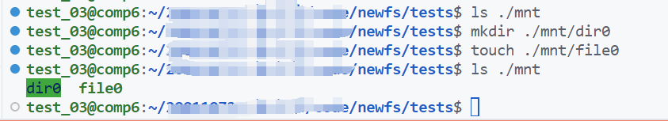
同任务一，使用完文件系统后，及时 通过 fusermount 命令来卸载文件系统 ，不要直接使用 Ctrl+C 和 VSCode 终止的方式，避免影响下一次挂载。
3.3.2 测评程序¶
我们为同学们提供了任务二的测评程序，位于 tests 目录下的 test.sh。
在开始运行测评程序之前，需要先 填写好 include 目录下的 fs.layout 文件 ，供测评程序使用。fs.layout 文件用于描述你的磁盘布局情况，其中 () 内的数值代表占多少个块，BSIZE 代表逻辑块大小：
| BSIZE = 1024 B |
| Super(1) | Inode Map(1) | DATA Map(1) | INODE(1) | DATA(*) |
这段配置表示文件系统如何按逻辑块划分磁盘：
BSIZE = 1024 B：表示文件系统按1024B作为一个 逻辑块 来管理磁盘空间。这里说的是文件系统内部看到的块大小，不是驱动单次 IO 的大小。Super(1)：超级块占1个逻辑块。Inode Map(1)：inode位图占1个逻辑块。DATA Map(1)：数据块位图占1个逻辑块。INODE(1)：inode区占1个逻辑块。DATA(*)：其余逻辑块全部划给数据区。
测评脚本会根据这份 fs.layout 去理解你的磁盘布局，所以这里填写的块数和实际实现必须一致；否则即使代码本身没有大问题，布局检查也可能失败。
然后在 tests 目录下（ 请在该目录下运行测评程序 ），执行如下命令：
chmod +x test.sh && ./test.sh
测试方式：输入 N，选择基础功能测试。
下图为通过所有测试用例的示意：
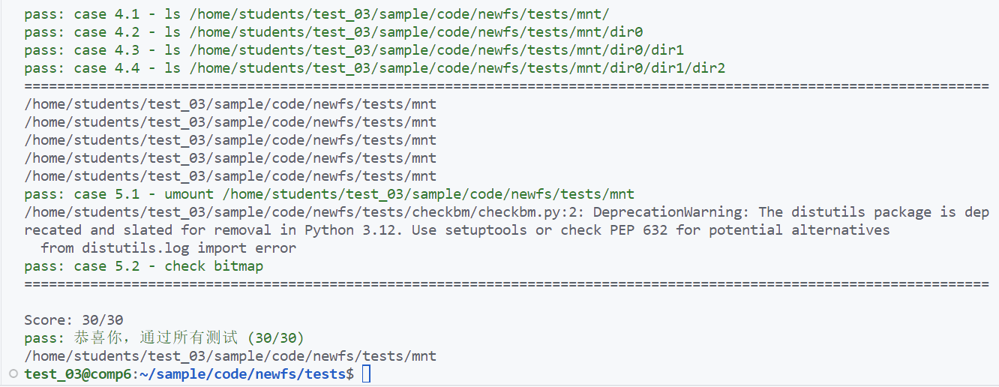
测评脚本等价于运行了一组固定的测试命令，同学们也可以参考下面的序列自行排查问题。
正确的序列如下（ 基础分 30 分 ）：
-
F5（或Fn+F5）挂载文件系统（1 分） -
mkdir 测试（4 分）
mkdir ./tests/mnt/dir0
mkdir ./tests/mnt/dir0/dir0
mkdir ./tests/mnt/dir0/dir0/dir0
mkdir ./tests/mnt/dir1
- touch 测试（5 分）
touch ./tests/mnt/file0
touch ./tests/mnt/dir0/file0
touch ./tests/mnt/dir0/dir0/file0
touch ./tests/mnt/dir0/dir0/dir0/file0
touch ./tests/mnt/dir1/file0
- ls 测试（4 分）
mkdir ./tests/mnt/dir0
touch ./tests/mnt/file0
mkdir ./tests/mnt/dir0/dir1
mkdir ./tests/mnt/dir0/dir1/dir2
touch ./tests/mnt/dir0/dir1/dir2/file4
touch ./tests/mnt/dir0/dir1/dir2/file5
touch ./tests/mnt/dir0/dir1/dir2/file6
touch ./tests/mnt/dir0/dir1/file3
touch ./tests/mnt/dir0/file1
--------------
ls ./tests/mnt
ls ./tests/mnt/dir0
ls ./tests/mnt/dir0/dir1
ls ./tests/mnt/dir0/dir1/dir2
- remount 测试（16 分）
这一步主要是在检查你的文件系统是否真的把目录项、inode 和相关元数据正确写回了磁盘，而不是只在当前挂载期间“内存里看起来能用”。如果卸载再挂载后原来的目录和文件还在，说明持久化路径基本是通的。
# 卸载文件系统 1 分
fusermount -u ./tests/mnt
# remount 结果显示正确 3 分
ddriver -r
# F5(或Fn+F5)挂载文件系统
mkdir ./tests/mnt/dir0
mkdir ./tests/mnt/dir0/dir1
mkdir ./tests/mnt/dir0/dir1/dir2
touch ./tests/mnt/dir0/dir1/dir2/file4
touch ./tests/mnt/dir0/dir1/dir2/file5
touch ./tests/mnt/dir0/dir1/dir2/file6
fusermount -u ./tests/mnt
# F5(或Fn+F5)挂载文件系统
--------------
ls ./tests/mnt/dir0/dir1/dir2
# 布局检查通过
ddriver -r
# F5(或Fn+F5)挂载文件系统
touch ./tests/mnt/hello
ls ./tests/mnt
fusermount -u ./tests/mnt
python3 ./tests/checkbm/checkbm.py -l ./include/fs.layout -r ./tests/checkbm/golden.json -n "hello"
以上命令均测试成功（ ls 输出正常 ），则测试通过。